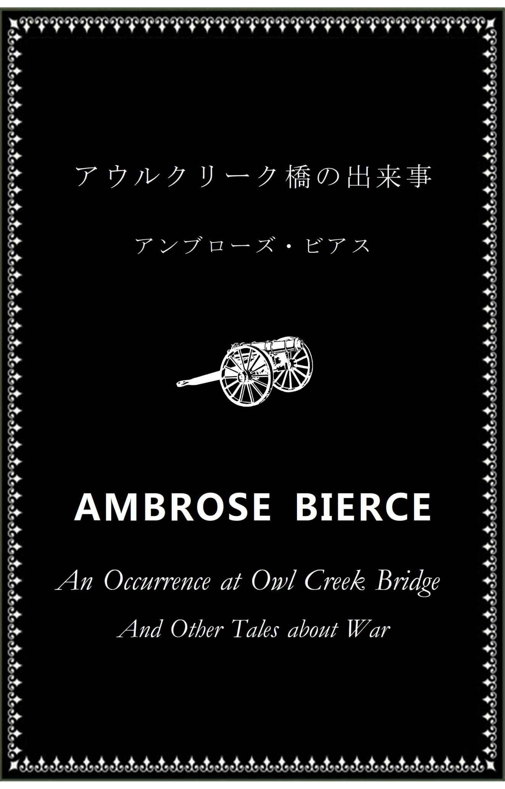
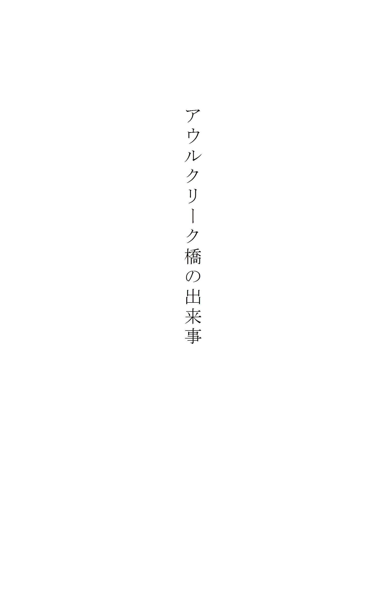
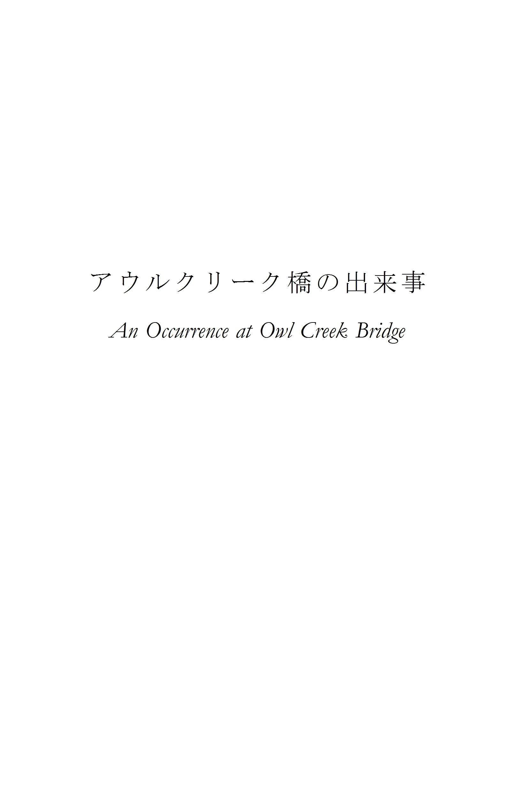
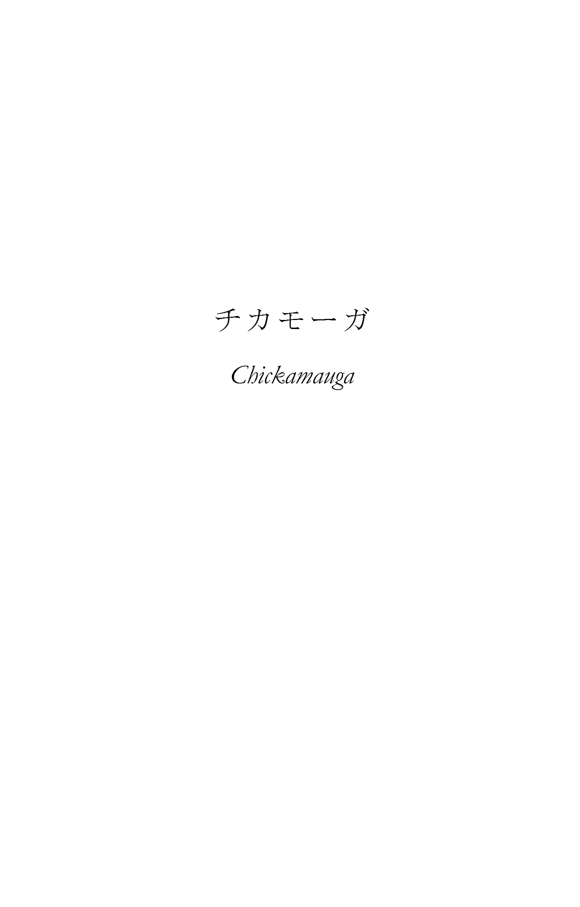
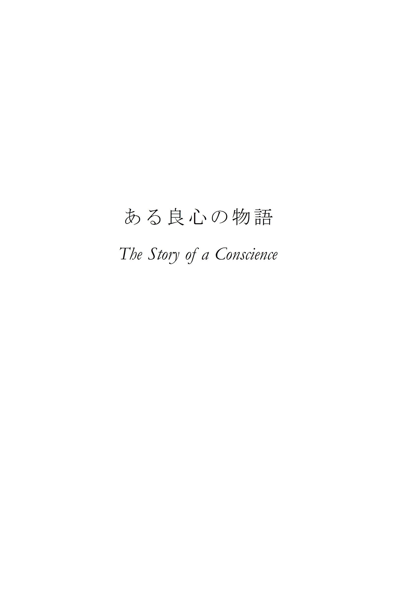
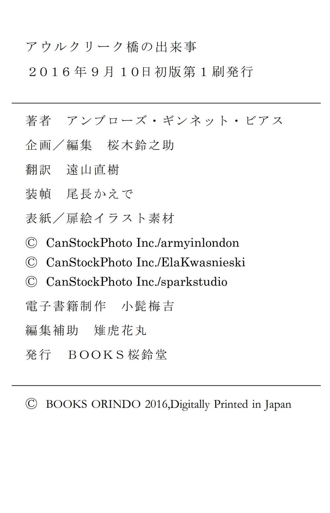

| アウルクリーク橋の出来事 | |
| アンブローズ・ビアス | |
| BOOKSORINDO (2016) | |

目次


･
Ⅰ
男が一人、アラバマ州北部のとある鉄橋の上に立ち、六メートルほど下方を勢いよく流れる川を見下ろしていた。男の両手は後ろに回され、手首を紐で縛られている。首にはロープがきつく巻きつけられている。ロープは頭上で交差する頑丈な梁に結わえつけられ、そこから垂れ下がって男の膝の高さでＵの字を描いている。鉄路を支える枕木の間に渡された数枚の木板が、男とその処刑者たち――入隊前は保安官助手でもやっていたような軍曹と、彼の選んだ北軍の二等兵が二名――の足場代わりになっていた。
その同じ踏み板の上には、三人から少し離れて、士官服姿の将校が一人立っている。こちらは大尉である。橋の両端にはそれぞれ歩哨が一人ずつ、ライフル銃を〈支え銃 〉の姿勢で構えて立っている。これは銃を左肩の前に垂直に立てて保持し、左腕の肘から先を胸の前に水平に伸ばしてその上に撃鉄をのせる姿勢で、堅苦しく無理のある体勢だが、背筋は自然と真っ直ぐに伸びる。橋の中央で起こっていることを知ることは、この二人の兵士の義務ではないようである。彼らはただ鉄橋の板張りの歩道を封鎖していればいいのだ。
一方の歩哨の立っている場所の前方には人の姿はなかった。線路は森の中を真っ直ぐに百メートルほど伸び、やがて横に曲がって見えなくなる。おそらくその先に前哨基地があるのだろう。反対側の岸は空き地になっている。緩やかな土手のてっぺんには、木の杭を垂直に打ち込んた塁壁が設けられている。壁には銃眼がうがたれ、一つだけある砲門からは真鍮製の大砲が突き出して、その先端を橋に向けている。
鉄橋と砦の間、土手の斜面の中ほどには見物人たちの姿がある――歩兵一個中隊が、ライフル銃の銃尻を地面につけ、銃身は若干後方に傾けて右肩に当て、両手を銃床の上で重ねる、〈行進休め〉の姿勢で整列している。列の右端には一人の中尉が立っており、右手に持った軍刀の切っ先を地面に突き立て、その手に左手を重ねている。
橋の中央にいる四人を除けば、誰一人動く者はない。中隊は橋の方を向いて、まるで石のように不動のままそちらを見つめている。それぞれ岸の方を向いた二人の歩哨も、まるで橋を飾る彫像のようである。大尉は腕組みをして立ったまま黙って部下たちの作業を見守っているが、まだ執行の合図は出さない。死とは、その到来が前もって知らされている場合には、たとえ彼ともっとも親しい者であろうともきちんと礼を尽くして迎えなければならない要人である。軍隊の礼儀作法においては、沈黙と不動とは敬意の表明なのだ。
絞首刑に処される男は三十五歳くらいだろうか。身なりからするに民間人のようで、服装は農場主のそれである。顔立ちは整っている――真っ直ぐ通った鼻筋。引き締まった口元。広い額。その生え際から長い黒髪が真っ直ぐ後ろに撫でつけられ、耳の後ろを通って仕立てのいいフロックコートの襟にかかっている。口髭を生やし、顎髭の先を尖らせているが、頬髭はない。目は大きく、濃い灰色で、首に縄をかけられた人間とは思えないような柔和な表情を浮かべている。どう見ても卑劣な人殺しではない。軍法には多種多様な人間を絞首刑に処するための規定が惜しみなく盛り込まれており、紳士の項目もきちんとある。
準備が終わると、二人の二等兵は脇にどき、それぞれにそれまで自分の立っていた踏み板を取り払った。軍曹が大尉の方を向き、敬礼をしてその真後ろに移動すると、今度は大尉が脇に一歩動いた。これで、死刑囚と軍曹とが、鉄橋の枕木三本分にまたがる同じ踏み板の両端にそれぞれ立つ形になった。死刑囚の立っている側の端は、四本目の枕木の手前までしか届いていない。ここまでこの板は大尉の体重だけで支えられていたが、今それは軍曹の体重で抑えられている。大尉の合図で軍曹が脇にどくと、板が傾いて、死刑囚は二本の枕木の間に落ちる。簡潔にして効果的な方法であると、処刑される当人はそう評価していた。
男は頭に袋をかぶせられてもおらず、目隠しもされていなかった。彼はしばし不確かな足下を見つめ、さらにその下方、渦を巻きながら勢いよく流れていく川へとふらふらと視線を移ろわせた。川面を踊るように下っていく一本の流木に気を引かれ、それを目で追った。なんてゆっくりと動いているように見えるんだろう。なんてのろい流れだろう。
男は妻と子供たちのことを思いながらこの世に別れを告げようと、瞼を閉じた。朝陽に金色に染められた川面。遠く、下流の土手を低く漂う朝靄。砦。兵士たち。流木――何を見ても気が散ってしまうのだ。しかし今、彼は新たな雑念の源を意識していた。家族への思いに重なるようにして鳴り響く、無視することのできない、正体不明の音を。それは金床を打つ鍛冶屋の金槌の音のような、鋭く、明瞭で、金属的な打撃音だった。槌音 と同じ、ガンガンと頭に鳴り響くような音である。
いったい何の音だろうか。計り知れないほど遠いのか、それとも近いのか――どちらにも思える。一定の間隔を置いて繰り返されるそのリズムは、弔鐘のようにゆったりとしている。彼はその一打一打をじりじりしながら、（自分でもなぜかはわからないが）不安な思いを胸に待った。その合間の沈黙は次第に長くなっていく。その分の遅れが、気が遠くなるほどにもどかしく感じられる。間隔が開くほどに音は大きさと鋭さを増していく。まるでナイフで刺されたように耳が痛んだ。悲鳴を上げてしまいそうだった。彼が聞いていたのは、懐に入れた時計の針音だった。
彼は目を開けて、再び眼下を流れる川を見やった。「手が自由になれば、首のロープを振りほどいて川に飛び込めるのに。水中に潜って連中の撃ってくる弾をやりすごして、夢中で泳いで、岸に上がって、森に逃げ込んで家に帰るんだ。ありがたいことに、我が家はまだあいつらの前線の向こうにある。侵略者たちの先兵隊も、まだ妻や子供たちのところまで達してはいないんだ」
このような思いが（ここではやむを得ず言葉に置き換えたが）死刑囚の脳に閃いた刹那、それがそこから広がっていく前に、大尉が軍曹に向かってうなずいた。軍曹は木板から下りた。
･
Ⅱ
ペイトン・ファーカーは裕福な農場主で、アラバマ州の名高い旧家の出だった。奴隷の所有者であり、また奴隷の所有者のご多分に漏れず利害勘定に長けていた彼は、当然のごとく連邦からの分離脱退を早くから支持しており、南軍の大義の熱烈な信奉者だった。差し迫った事情が重なったために（ここでは割愛するが）南軍への入隊がかなわず、勇ましき友軍が大敗を喫し、戦略上の要所であったミシシッピ州コリンスから全面撤退するのを傍観していた彼は、身動きの取れない自らの不名誉な現状に苛立ちを感じ、活力の発散を、より大きな人生を、戦場で武功を上げ名をなす機会を切に望んでいた。そのような機会は、戦時中ならば誰にでも訪れるように、この自分にもきっと巡ってくるだろう。その間は自分にできるだけのことをやっていればいい。そこで彼は、南軍の助けになることならばどんな雑用でもこなしたし、民間人でも心は軍人、「恋と戦争は手段を選ばず」という、言ってしまえば卑劣な格言の少なくとも一部に（あくまでも善意から）手放しで賛同する者の気質に合うものであれば、どんな危ない橋でも渡った。
ある日の夕方、ファーカーとその細君が彼の農場の入口近くにある丸太のベンチに腰かけていると、南軍の灰色の軍服を着た兵士が一人、馬で門の前まで乗りつけて水を一杯所望した。ファーカー夫人はその白い手で自ら相手をもてなそうといそいそと立っていった。細君が水を汲みにいっている間に、ファーカーはその埃だらけの騎兵に歩み寄り、逸る思いで前線からの報せはないだろうかと尋ねた。
「北の連中、線路を修理していますよ」兵士は答えた。「次の進軍に備えているんでしょう。すでにアウルクリーク橋に到着して、あの鉄橋を直して、川の北側の土手に柵を作っています。司令官が通達を出していましてね。あちこちに張り出されていますよ。線路、鉄橋、トンネル、および列車に対して妨害工作を企てる者は、逮捕次第即刻絞首刑に処す、だそうです。私も見ました」
「そのアウルクリーク橋まで、ここからどれくらいありますか？」
「四十五キロくらいです」
「川のこちら側には敵はいないのですか？」
「橋の一キロほど手前の線路沿いに哨兵の詰所が一つあって、それから鉄橋のこちら側のたもとに歩哨が一人立っていますが、それだけです」
「たとえばですよ――民間人で、絞首刑にひどく関心のある者が、その詰所をうまいこと通過して、鉄橋の前にいる見張りをやりすごしたとしたら」ファーカーはそう言って微笑んだ。「その男はどんな手柄を立てられるでしょう？」
兵士は思案顔になった。「私もひと月前にあそこにいたんですが、去年の冬の増水で流れ着いた大量の流木が、橋のこちら側の木製の橋脚に引っかかっていました。今頃は乾燥しているでしょうから、よく燃えるでしょう」
やがて夫人が水を持ってきた。兵士はそれを飲むと、夫人に丁重に礼を言い、ファーカーに一礼して去っていった。一時間後、日が暮れてから、その兵士は再びファーカーの農園の前を通り、北の方角に向かってもと来た道を引き返していった。兵士は北軍の斥候 だった。
･
Ⅲ
枕木の間を真っ逆さまに落ちていきながら、ペイトン・ファーカーは意識を失い、瀕死の状態にあった。やがて喉を強く圧迫される痛みと、それに続く窒息感とで意識を取り戻したが、それは何年も後のことのように思えた。鋭く、刺すような激痛が、首から下に向かって身体と手足の細胞という細胞を刺し貫いていくような感覚があった。細かく枝分かれした神経網の一本一本を伝ってほとばしり、信じられないほど急激な周期でがんがんと鳴り響くような痛みだった。それはまるでどくどくと脈打つ炎の奔流のように、身体を耐えがたい温度にまで熱していく。
その一方で、頭には浮腫 んだような感覚があるだけだった――鬱血しているのである。それは意識を伴わない感覚だった。思考を司 る身体機能はすでに停止していた。今あるのは何かを感じる能力だけであり、そして感覚は拷問だった。
自分が動いているのがわかった。光る靄に包まれて、実体のないまま、今やただその靄の燃え盛る中心となった彼は、さながら巨大な振り子のように、とてつもなく大きな弧を描いてぶらりぶらりと左右に揺れていた。突然、大きな水音とともにあたりを包んでいた光が見る見る上の方へと昇っていった。轟々という音に耳をふさがれたかと思うと、やがてすべては冷たさと闇に包まれた。
考える力が戻ってきた。ロープが切れて川に落ちたのだ。しかしそれ以上息が苦しくなることはなかった。首に巻きついたロープのせいで呼吸はすでに止まりつつあり、おかげで肺に水が入ってくることはなかった。川底で首をくくられて死ぬとは！ おかしなものだった。暗闇の中で目を開けると、頭上にきらきらと光が見えたが、しかしそれはなんと遠く、手の届かぬところにあることか。
身体はなおも沈んでいく。光はどんどん翳り、ついにはほんの薄明かりになってしまった。と思いきや、光が少しずつ広がって明るさを増し始め、彼は自分が水面に向かって浮き上がっていることを悟り――そして気が重くなった。今はもう、このままで不満はなかったのだ。彼は思った。「首を吊られて溺れ死ぬ。それも悪くないさ。でも銃殺はごめんだ。そうだ。撃たれて死ぬなんてあんまりだ」
手首の鋭い痛みで、自分が無意識のうちに両手を縛っている紐を解こうとしていることに気がついた。彼はその手の動きに注意を向けた。曲芸師の芸当を眺める通りすがりの人のように、成功しようと失敗しようと自分には関係ないといった心持ちで。なんと素晴らしい骨折り！――なんという堂々たる、人間離れした力！ いやはや、これはたいしたものだ。お見事！
紐がほどけた。両腕が離れて浮き上がり、明るさを増していく光の中、両手が視界の左右の隅に浮かんでいるのがわずかに見える。まず一方の手が、さらにもう片方の手が首にかけられたロープをつかむと、彼は新たな関心をもって自分の両手を見つめた。両手はロープを勢いよく振りほどき、ゆらゆらとしなるロープは水蛇のようだった。
「やめろ。戻すんだ！」自分の手に向かってそう叫んだような気がした。ロープが解けた途端、今度はいまだかつて体験したことのないような、とてつもない激痛が襲ってきた。首が猛烈に痛んだ。脳が燃えるように熱く、弱々しく脈打っていた心臓が勢いよく飛び跳ね、口をこじ開けて身体の外に逃げ出そうとしている。全身が耐えがたい激痛に苦しみ悶えていた。しかし両手は言うことを聞かず、下方に向けて素早く、力強く水を掻いて、渋る彼を水面へと押し上げていく。
頭が水面に出るのがわかった。陽光に目が眩んだ。胸が痙攣 するように膨らみ、無上の、とてつもない痛みとともに肺が空気を吸い込むや、すぐさま彼はそれを悲鳴と一緒に吐き出した。
今や身体の感覚はすっかり戻っていた。それどころか、感覚は異常なほどに鋭敏になっていた。体内器官に激しい異変が生じているうちに、五感はこれまで感知しなかった事柄を意識に伝えられるまでに高められ、研ぎ澄まされていた。顔に打ち寄せるさざ波が感じられ、一つ一つの波が顔に当たる音が聞き分けられる。河岸の森に目をやると、木々の一本一本、木の葉の一枚一枚、その表面に走る葉脈までもが見える――さらには葉の上にとまった虫も。バッタ。きらきらと輝く身体の蠅。木枝から木枝へと巣を張り渡した灰色の蜘蛛。無数の草の葉についた朝露が、ことごとく虹色に輝いている。川の渦の上を舞い飛ぶブヨの羽音。宙に浮いた小舟が櫂 を漕ぐように、アメンボの脚が水を掻く音――あらゆるものが音楽となって鼓膜を振るわせる。魚が一匹、目の下をするりと泳いでいき、その身体が水を切り裂いて突き進む音も聞こえた。
彼は下流の方を向いた状態で水に浮かんでいた。ほどなく、視界が自分を軸にしてゆっくりと回転し、鉄橋と砦、そして鉄橋の上の兵士たち――大尉、軍曹、処刑の執行者である二人の二等兵が目に入った。みな青空を背に黒いシルエットとなって、こちらを指差して叫び声を上げている。大尉は拳銃を抜いていたが、発砲はしなかった。他の三人は武器を持っていない。彼らの動きは奇怪でおぞましく、その姿は巨人さながらに大きく見えた。
突然鋭い銃声が聞こえた。何かが頭からわずか数センチ先の水面を激しく打って、顔に水飛沫 がかかった。二発目の銃声が鳴り響き、橋の上の歩哨の一人がライフル銃を構えているのが見えた。銃口から青みを帯びた煙がうっすらと立ち昇っている。彼がライフル銃の照準器越しにこちらを覗き込んでいるのが見える。その目は灰色で、ファーカーは灰色の目はもっとも鋭く、狙撃の名手はみな灰色の目をしていることをどこかで読んだことがあるのを思い出した。それなのに、この兵士は狙いを外したのだ。
逆巻きの渦にとらえられ、身体が半回転した。再び砦の反対側の岸が視界に入った。一本調子で抑揚のない、高く澄んだ声が背後で響き、他のあらゆる音を、耳に打ち寄せるさざ波の音をも圧するほどに朗々と、川面を渡って聞こえてくる。兵士ではなくとも、軍の野営地をたびたび訪れたことのあるファーカーは、その冷静で、一音ずつを伸ばしてきびきびと発される号令の持つ恐ろしい意味合いを知っていた。岸に立っていた中尉がこの朝の処刑に参加したのだ。なんと冷たく、非情に――なんと平坦で、静かな抑揚で凶事の訪れを告げ、兵士たちに平静を強いつつ――なんと正確に計られた間を挟みつつ、その残酷な命令は発せられたことか。
「中隊......気をつけ！......担 え銃 ！......狙え！......撃て！」
ファーカーは水に潜った――できるだけ深く。水音が耳の中でナイアガラの瀑布さながらの轟音となり、そこに一斉射撃の遠雷のようなくぐもった音が重なった。やがて水面に向けて浮かび上がっていくと、ぐしゃりと潰れた輝く金属片が、ゆらゆら揺れながら降ってきた。いくつかが手に当たったが、ぱらぱらとそのまま沈んでいった。そのうちの一つが襟と首の間に挟まり、その温もりが不快で、ファーカーはそれをひったくるようにして取り除いた。
水面から顔を出して大きく息を吸い込むと、自分が長い間水中にいたことがわかった。さっきよりも川下に――より安全に近いところにいるのがひと目でわかる。兵士たちはライフル銃の弾込めを終えようとしていた。銃口から引き抜かれ、くるりと宙で回されて銃身の下の筒に収められる金属の込め矢が、朝陽を浴びて一斉に閃いた。橋の上の二人の歩哨が今度は一人ずつばらばらに発砲したが、当たらなかった。
ファーカーはその一部始終を肩越しに眺めていた。流れに乗って勢いよく水を掻く。今や手足に負けず劣らず、頭も活発に動いていた。思考が光の速さで駆け巡る。
「あの将校も、定石通りの今の過ちを繰り返すことはないだろう。一斉射撃は一発撃つのと同じで、簡単にやりすごせる。たぶん、すでに各自発砲の命令を出しているだろう。神様、お助けを！ そうなればさすがに全部は避けきれない」
ほんの二メートル先ですさまじい水飛沫 が上がり、続いて何かが勢いよく迫ってくるようなけたたましい音がした。ヒュウウゥゥゥ と、その音はまるで砦に向かって空中を逆戻りしていくように次第に小さくなっていき、やがて川底まで揺るがすような爆発音に掻き消された。盛り上がった水面が垂れ幕のように覆い被さってファーカーに降り注ぎ、目を、耳を、口をふさいだ。大砲がこの追跡劇に参加したのだ。
着弾して乱れた水面から顔を出して水を振り払うと、水面に当たって跳ねた砲弾が唸りを上げて前方を飛んでいき、ほどなくその先の森の枝が折れるばりばりという音がした。
ファーカーは考えた。「連中も同じ手は二度は使うまい。次はブドウ弾 ※１ を撃ってくるぞ。大砲から目を離したらまずい。煙が目印だ――砲声が聞こえてからでは遅い。音より先に弾が飛んでくる。あれはいい大砲だぞ」
突然、自分の身体がぐるぐると、まるで独楽 のように回転する感覚があった。川面 。両岸の土手。森。今や遠くに見える鉄橋。砦と兵士たち。何もかもがぼやけて混ざり合う。水平方向に円を描く、色とりどりの縞模様――それが目に映るもののすべてだった。渦にとらえられた彼は、目が回って気持ち悪くなるほどの速さで、ぐるりぐるりと回転しながら川下へと流されていった。
しばらくすると、彼は流れに向かって左手、すなわち川の南岸の砂利浜に打ち上げられた。そこは岬のように土手が張り出しており、敵からは死角になっている。流されていた身体が急に止まり、片手を砂利で擦り剥いたことではっと我に返ったファーカーは、喜びにむせび泣いた。手で砂の地面を掘って頭上に放り上げ、声に出して祝福した。砂はダイアモンドの、ルビーの、エメラルドのようだった。思いつく限りありとあらゆる美しいものに見えた。
土手に生えている木々も、庭の植木を大きくしたように見える。彼は立ち並ぶ木々の整然としたたたずまいに見とれ、そこに咲く花々の香りを胸に吸い込んだ。薔薇色の不思議な光が幹と幹の間から射し込み、梢を揺らす風が天然のハープのような音色を奏でる。ファーカーはこのまま逃げ切ってしまいたいとは思わなかった――再び敵に捕まってしまうまで、この得も言われぬ美しい場所にいられればそれでよかった。
頭上高く、ブドウ弾が空を裂き、枝を揺らす音が、ファーカーを夢から目覚めさせた。標的を見失った砲撃手が、でたらめな方向に挨拶代わりの一発をお見舞いしたのだ。ファーカーは跳ね起きると、土手の斜面を駆け上がって森に逃げ込んだ。
移りゆく太陽の位置をもとに進む方角を決めながら、その日は一日中歩き続けた。森は果てしなく続いているように思えた。木々は途切れることなく、木こり道すら見つからない。自分がこれほど未開の地域に住んでいるとはつゆ知らなかった。そう思うと不安になってきた。
日が暮れる頃には、ファーカーは疲れ果て、足には靴擦れができ、飢え死にしそうだった。それでも、妻と子供たちの思いに背中を押されるようにして歩き続けた。やがてようやく一本の道が見つかり、彼はこれこそ我が家のある方角に続く道だと確信した。街道のように幅が広く、真っ直ぐな道だったが、使われてはいないようだった。道沿いに農園はなく、人家も見当たらない。人の住んでいることをうかがわせる、犬の鳴き声一つ聞こえなかった。
木々の黒々とした幹が道の両側に壁のように真っ直ぐ並び、学校の授業に使われる遠近法の図よろしく、地平線の一点に収束している。道の上の空を見上げると、見覚えのない大きな金色の星々が、見慣れぬ星座の形に寄り集まっている。きっと星たちは秘密の、悪意ある意味合いを持つ形に並べられているのだ。道の両側に広がる森は奇妙な音で満ちており、その中に混じって――一度、二度、さらにもう一度――知らない言葉で囁く声がはっきりと聞こえた。
首が痛み、手を当ててみるとひどく腫れていた。ロープの痕が黒い痣 になっているに違いなかった。目は充血していた。もう瞼を閉じることができない。舌はからからに乾いて腫れている。舌を突き出すと、ひんやりとした空気が火照りを和らげてくれた。この未踏の道に敷き詰められた芝生のなんと柔らかいことだろう――もう地面を踏む感覚もないではないか！
ぼろぼろになりながらも、歩きながら眠っていたのだろう。ふと気がつくと、目の前にそれまでとは別の風景が広がっていた――あるいはそれも、朦朧 とした意識が晴れてきただけのことなのかもしれないが。彼は今、自宅の門の前に立っていた。何もかもが出かけた時のままで、そして何もかもが、朝陽を浴びてきらきらと美しく輝いている。夜通し歩き続けていたに違いなかった。
門を押し開け、庭を通る幅の広い白い道を辿っていくと、女物のドレスがはためいているのが見える。清々しく、凜々 しく、可憐なたたずまいの妻が、彼を迎えに玄関ポーチを下りてくる。玄関前の踏み段の一番下に立ち、彼女は言い尽くせぬほど嬉しそうな微笑みを浮かべて、なんとも淑 やかで威厳のある姿で待っている。ああ、なんてきれいなんだろう！ 彼は両手を広げて駆け出す。妻を抱き締めようとしたその瞬間、うなじにすさまじい衝撃を感じた。目の眩むような白い光が、轟 く砲声にも似た音とともにあたりを包み――やがてすべては闇と沈黙に閉ざされた。
ペイトン・ファーカーは死んだ。首の骨の折れたその亡骸 が、アウルクリーク橋の橋桁の下で、ゆらりゆらりと揺れていた。

･
ある晴れた秋の午後、少年が一人、小さな畑の中に建つ丸太小屋からふらりと出てきて、誰にも見られぬまま森に入っていった。大人たちの目から解放され、こうして森の中を探検する喜びに、少年の心は弾んでいた。先祖たちと同じ身体に宿る彼の魂は、数千年もの長きにわたり、発見と征服という偉大なる才覚を植え付けられているのである――戦 の勝利の瞬間が積もり積もって何世紀分もの長さになり、勝者の陣地が石造りの都市をなすほどに。誕生以来、人類は二つの大陸を征服し、大海を渡ってさらに次の大陸に攻め込んで、そしてこの地においても、その遺産としての戦争と支配の歴史を繰り返してきたのだ。
少年は六歳くらいの、貧しい入植者の息子だった。父親は若い頃戦争に行ったことがあり、半裸の蛮人と戦い、国旗を掲げて遙か南にある文明人たちの住む町に向かって進軍した。土を耕す今の平穏な暮らしの中でも、闘争心はまだ残っていた。一度火がつくと、それは決して消えることはないのだ。父親は戦争物の本や絵を好み、少年も子供なりに戦争を理解して木の剣を手作りするほどだったが、しかし肝心のそれは、父親の目から見ても剣とはわからないような代物だった。
この剣を、少年は今、雄々しき人類の末裔にふさわしく堂々と手にし、ときおり足を止めては、父の本の挿絵の見よう見真似で、いささか大げさな攻撃や防御の構えをとってみたりした。行く手を阻む目に見えぬ敵たちを蹴散らして勢いづいた彼は、敵を深追いするという、よくある作戦上の過ちを犯し、やがて幅の広く浅い小川のほとりに立っていた。
流れの早い水に進軍を止められてしまったが、しかし敗走する敵軍はどうしたものか苦もなく流れを渡っていった。しかし勇者たるもの、これしきのことでは挫けない。少年の小さな胸の中には、大海を渡った偉大なる人類の不屈の魂が燃え盛っているのである。大きな岩がごろごろと転がっているところがあったので、岩から岩へと飛び移って川を渡ると、少年は再び空想の敵軍のしんがり に襲いかかり、一人残らず斬り捨てた。
戦いに勝利した今、ここは慎重を期して作戦本部に戻るのが定石である。しかし残念なことに、過去の偉大なる征服者たち、そしてその中でももっとも偉大な一人、かの〈大奈王〉ことナポレオンと同じく、少年は「武心を鎮むるに能 わず、逆 はれし運命 、中天の星をも捨つるを知らざるや ※２ 」だった。
川辺を離れてさらに進軍を続けていくと、突然、新たな、そしてさらに手強い敵が現れた。今辿っている道の先に、背中をぴんと伸ばし、耳を立て、前足を宙に浮かせて陣取っているのは、なんと一匹のウサギではないか！ わっと驚きの声とともに少年は身を翻して逃げ去り、自分でもどちらに向かっているのかわからぬまま、泣きじゃくり、よろめきながら、言葉にならない声で母親を呼んだ。柔らかい肌は無惨に藪に切り裂かれ、小さな心臓は恐怖に早鐘を打ち――息を切らし、恐怖のあまりまわりも見ずに突き進むうちに、彼は森の中で迷子になってしまった。
それから一時間以上、少年はおぼつかない足取りで絡まり合った下生えの中をさまよい歩き、やがてとうとう、疲れ果てて、小川のほど近くにある二つの岩の隙間に横になると、今や武器と言うよりもたった一人の道連れとなったおもちゃの剣を握りしめたまま、泣いているうちに寝入ってしまった。
その頭上で森の鳥たちが陽気に歌い交わした。リスたちはその大きな尾を振り振り、少年の窮状に気づくことなく、啼き声を上げながら枝伝いに駆け回り、どこか遠くから聞こえてくる耳慣れない遠雷のような音は、太古より自然を虐 げてきた者たちの息子に対する勝利を祝して、ヤマウズラが翼をはためかせているのだろうか。そして森の外の小さな入植地では、白人や黒人たちが畑や藪の中をあたふたと探し回り、母親は行方のわからなくなった我が子を思って胸を痛めていた。
数時間後、少年は眠りから覚めて立ち上がった。夕刻の寒さに手足が冷え、暗がりに対する恐怖が心を包んだ。しかし疲れは癒え、涙も乾いていた。抗いがたい衝動に突き動かされるまま下生えを掻き分けて進んでいくと、木々が開けた場所に出た。右手には小川が流れ、左手は木々がぽつぽつとまばらに生えた緩やかな登り斜面になっている。見上げた空は暮れかかっていた。川の上には幽 かな霧が漂っている。それを見ると、少年は怖じ気づいて後じさった。もう一度川を渡ってもと来た方角に戻ることはせず、そちらに背を向けると、開けた斜面を囲む暗い森の方へと向かった。
突然、前方に奇妙な動く物体が見えた。何やら大型の動物――犬、あるいは豚だろうか――らしいが、正体はわからなかった。ひょっとしたら熊かもしれない。少年は熊の絵を見たことがあって、それが恐ろしい動物だとは露知らず、本物を見てみたいと何となく思っていたのだった。
しかし、その物体の形、あるいは動き方――こちらに近づいてくる様子のぎこちなさ――には、どことなく熊ではないような感じがあって、好奇心は恐怖と入れ替わった。彼は足がすくんで動けなくなった。が、それ がじりじりと近づいてくるにつれて、少しずつ勇気が出てきた。少なくとも、それ にはウサギのあの長く恐ろしい耳はない。おそらく、その察しのいい子供心のどこかで、相手のよろよろと、ぎこちない動きにどこか馴染みのあるものを感じ取っていたのだろう。
それ が正体がわかるほどまで近づいてくる前に、その後ろにもう一体いるのが見えた。さらにもう一体。そればかりか右にも左にも、さらに大勢がいる。少年のいる林間地全体が、地面をびっしりと埋め尽くし、一斉に川に向かって動いてくるそれら で蠢 いていた。
それは人間だった。地面を這う男たちだった。手だけを使って足を引きずっている者もいれば、両腕はだらりと伸ばしたまま、膝だけを使って這い進む者もいた。立ち上がろうともがいて、地面にばったりと倒れ伏す者も。その一挙手一投足が不自然で、のろのろと同じ方向に進んでいることを除けば、それぞれがばらばらに動いていた。一人だけ、あるいは二人並んで、あるいは数人固まって、彼らは薄闇の中を這い進み、ときおり誰かが動きを止めると、その横を他の者がのろのろと追い越していき、やがて止まっていた者も再び動き出す。
何十人、何百人とやって来る。右を向いても左を向いても、その群れは濃さを増していく夕闇の中で目の届く限り遠くまで広がり、その向こうに見える黒々とした森が果てしなく続いているように見える。まるで地面そのものが小川に向かって動いているかのようだった。
いったん動きを止め、地面に伏せたままもう動かなくなる者もいた。這うのを止めて、奇妙な手振りをし、腕を上げてまた下ろし、頭を抱える者もいた。ミサで一斉に祈りを捧げる際にするように、両手のひらを上に向けて広げてみせる者も。
このすべてを、少年が観察していたわけではない。これはもっと年長者ならば目に留めていたであろう細かな点である。少年にわかっていたのは、彼らが人間であり、それなのに赤ん坊のように這い這い しているということくらいだった。人間であるならば、見慣れない格好をしてはいるが怖くはない。彼は地を這う男たちの間を気ままに動き回り、無邪気な好奇心を胸にその顔を一つ一つ覗き込んでいった。どの顔も異様なほど白く、そのほとんどに赤い筋や斑 がついていた。それを見て――そしておそらくは、彼らの奇っ怪な姿勢や動き方も相まって、彼は前年の夏にサーカスで見た、顔に白粉 と紅を塗りたくった道化師をなんとなく思い出し、男たちを見回して笑った。
しかし、その笑い声と自分たちのおぞましくも陰惨な姿との劇的なまでの対比には無頓着なまま、この傷つき、血にまみれた男たちはなおも前進を続けた。少年にとって、それは愉快な光景だった。父親の使っている黒人に四つん這いになってもらい、その背に乗って「お馬さんごっこ」をして遊んだことを思い出し、少年は這う者たちの一人に後ろから近づいていき、すばしこい動きでその上にまたがった。
男は地面に突っ伏し、再び身体を浮かせて、飼い慣らされていない子馬がするように、激しく身をよじって彼を地面に振り落とした。そして下顎のない顔を彼の方に向けた――上の歯から喉にかけてがごっそりとえぐれて赤い穴になり、その縁から皮膚の切れ端が垂れ下がり、折れた骨が覗いている。不自然に突き出して見える鼻と、えぐれた顎、そして凶暴な目とが、喉を獲物の血で真っ赤に染めた猛禽 の印象をその顔に与えていた。男は膝立ちになり、少年は真っ直ぐに立ち上がった。男は子供に向かって威嚇するように拳を振り上げた。少年はそこでようやく恐怖を感じ、近くの木の陰に隠れると、さっきよりも真面目な気持ちでこの状況をあらためて眺めた。
ぎこちなく動く者たちは、のろのろと、痛々しげに身体を引きずるこのおぞましい無言劇を続けていた。あたかも大きな黒い甲虫の群れのようにぞろぞろと斜面を下り、しかしそうやって前に進みながらも、何一つ音をたてなかった――沈黙は深く、完全だった。
夕闇に包まれながらも、この呪われた情景は明るくなり始めた。小川の向こうで帯のように左右に広がる森の木々を透かして奇妙な赤い光が輝き、木々の幹や枝が黒い網目模様となって浮かび上がっている。その光の中、這う人たちの落とす不気味な影が、赤く照らされた草の上で男たちの動きを大げさに真似て戯れている。男たちの蒼白な顔はほの赤く染まり、その多くを筋や斑となって汚している血糊の紅 がひときわ鮮やかに見える。衣服についたボタンや留め金がきらきらと輝いている。
本能的に、少年は明るさを増していく光の方角を振り向くと、おぞましき戦友たちに混じって斜面を下りていった。ほどなく群れの先頭を行く者を追い越した――こちらは立って歩けるのだから当然である。相変わらず木の剣を手に持ったまま陣頭に立って粛々と部隊を導き、男たちに歩調を合わせ、ときおり部隊がきちんとついてきているかを確かめるかのように振り返った。前代未聞の指揮官率いる、前代未聞の行軍である。
この不気味な軍勢が小川に近づいていくにつれてじわじわと狭まっていく地面にはいくつかの品々が散らばっていたが、それは幼き指揮官にとってはまったく意味のないものばかりだった。きつく巻いて二つに折り曲げられ、端を紐で縛られた予備の毛布。こちらに重そうな背嚢 、あちらには壊れたライフル銃――要するに、撤退する部隊の通った後に見つかるような品々、追っ手から逃れる兵士たちが残していく痕跡である。
小川のほとりは地面が平坦になっており、いたるところ人と馬に踏み荒らされてぐちゃぐちゃになっていた。目敏い観察者ならば、これらの足跡が正反対の二つの方向を向いていることに気づいただろう。進軍と撤退とで、足跡はこの場所を二度通っていた。
数時間前、この瀕死の負傷兵たちは、もっと運に恵まれ、今は遠くへ撤退した戦友たちとともに、数千人規模でこの森に攻め込んだのだった。次々に投入される部隊は、散開したり整列したりしながら、少年のすぐそばを通り過ぎ――危うく眠っている彼を踏みつけそうにすらなった。しかし、進軍する兵士たちのたてる衣擦れや小さな物音にも、少年は目を覚ますことはなかった。彼の眠っているところから石を投げれば届くほど間近で、戦いが繰り広げられた。
しかしながら、マスケット銃の轟音も、野戦砲の衝撃も、「将師の怒号も鬨 の声も」 ※３ 、何一つ彼の耳には聞こえなかった。少年はその間中ずっと眠っていた。ひょっとすると、自分を取り囲む戦場の空気に無意識のうちに呼応して、あのちっぽけな木の剣を握る手にぎゅっと力を込めることもあったかもしれないが、武功を立てんと斃 れていった死者たちと同じく、戦闘の規模の大きさには無関心だった。
小川の対岸に広がる森の向こうに見える炎は、自ら上げる煙の天蓋に反射して地面を照らし、今や風景全体を包み込んでいた。火明かりを浴びて、蛇のようにうっすらとたなびく霧は金色の霞に変わった。川面はほの赤く輝き、水面に突き出した石の多くも赤く染まっていた。しかしそれは血の赤だった。傷の浅い者たちが川を渡る際に汚していったのだ。その石伝いに、少年も今、燃え盛る炎に向かって弾む足取りで川を渡った。
向こう岸に立った彼は、ともに行進する仲間たちを振り返った。行軍は川辺に辿り着こうとしていた。屈強な者はすでに川べりまで這い進み、顔を水に突っ込んでいる。そうやって身を伏せたまま身動きしない三、四人は、首がないように見える。それを見た少年の目が驚きに見開かれた。柔らかい子供の頭ですら、そのような状態で生きていられるというのはさすがに受け入れられなかった。渇きを癒やしはしたものの、彼らにはもう水辺を離れ、頭を持ち上げるだけの力が残っておらず、そのまま溺れ死んだのだ。
その向こうに目をやると、森の中の開けた土地は、はじめに見た時と同じく、少年の率いる不気味な兵士たちの模糊 とした人影でひしめき合っていたが、しかし動いている者の数は減っていた。かぶっていた帽子を打ち振って兵士たちを励ますと、彼は木の剣で一同を導く光を笑顔で指し示した――この奇っ怪なる流民の群れを導く炎の柱を。
部下たちの忠誠を固く信じ、少年は森の中に入っていくと、赤く照らされたその中を難なく通り抜け、柵を乗り越えて畑を駆け抜け、ときおり振り向いては自分と同じ動きをする影と戯れたりしながら、燃え盛る炎に包まれた一軒の家屋の残骸に近づいていった。
一面の地獄絵図だった。広い範囲を照らす火明かりの中のどこにも、生きている者の姿は見当たらなかった。少年はそれでも平然としていた。その光景が愉快で、揺らめく炎の動きを真似て踊りはしゃいだ。あたりを駆け回って火にくべる物を集めたが、見つかったものはどれもこれも、小さな彼が炎の熱を感じないで済む距離から投げ込むには重すぎた。腹立ち紛れに、彼は自前の木の剣を投げ込んだ――自然の強大さを前に降伏したのだ。少年の軍人としての経歴は終わりを告げた。
身体の向きを変えると、視界に数軒の離れの建物が入ってきた。まるで夢で見たことのある風景のように、そのたたずまいには奇妙にも見覚えがあった。少年は不思議そうに首を傾げてそちらを眺めていたが、突然、入植地全体が、あたりを囲む森ごと彼を軸にしてぐるりと動くような感じがした。羅針盤の南北が逆転するように、彼の小さな世界が水平に百八十度回転した。少年は悟った。燃え上がるあの建物が我が家であることを。
雷に打たれたような衝撃に、彼はしばし茫然と立ち尽くしていたが、やがてふらふらと駆け出して、変わり果てた我が家の裏手に回り込んだ。そこに、火明かりに明々と照らされて、女の死体が一つ横たわっていた――仰向けになった白い顔。投げ出された腕の先で、草を一杯に握りしめた両手。乱れた衣服。もつれ、血糊がべっとりとこびりついた長い黒髪。額は大きくえぐれ、ぎざぎざの穴から覗く脳味噌は表面にぶつぶつと紅色の泡の浮いた、灰色のぶよぶよとした塊で、それがこめかみに溢れ出ていた――榴弾の破片にやられたのだ。
少年はその小さな二つの手で、狂ったように、意味不明の手振りをした。不明瞭な、言葉にならない叫びを立て続けに発した――猿のけたたましい叫び声と、七面鳥の啼き声の中間あたりの声――聞く者をぎょっとさせるような、非情な、耳障りな声、悪魔の言葉を。少年は聾唖 だった。
彼はその場に立ち尽くし、唇を震わせながら、無惨な亡骸 を見下ろしていた。

･
Ⅰ
パロル・ハートロイ大尉は、自軍の見張り所で歩哨と小声で話をしていた。この持ち場はそこから約一キロ後方にある野営地を二分する一本の道路上にあるのだが、ただしこの地点からは野営地は見えない。大尉は見張りの兵士に何か指示を与えているらしい――あるいは、ただ前線が万事異常ないかどうかを尋ねているだけなのだろうか。
そうして二人が話をしていると、男が一人、野営地のある方角から軽く口笛を吹きながら近づいてきた。すぐさま歩哨が呼び止めた。男は一見したところ民間人のようである――背が高く、黄土色がかった灰色の粗末な手織りの服を着ている。〈バターナッツ〉と呼ばれる独特の色合いの衣類で、戦争後期の南部州の男たちは誰もがこれを着ていた ※４ 。もとは白かったのだろう、つば広の中折れ帽の下から垂れるぼさぼさの髪は、どうやら散髪もされなければ櫛も入れられていないようである。
どこか印象に残る顔だった。広い額。高い鼻。肉の薄い頬。口は髪に劣らず伸び放題の豊かな黒髭に隠れて見えない。目は大きく、対象をひたと見据える癖があり、これはたいていの場合、思慮深さと不屈の意志の証しである――とは、自分がそのような目をしている人相学者の弁である。全体的に、この男を前にすれば自ずとお互いに観察し合うことになりそうである。森で切ってきたばかりの枝を杖代わりに手に持ち、くたびれた牛革のブーツは埃にまみれて白くなっていた。
「通行証を見せろ」北軍の哨兵は言ったが、普段よりもいささか権柄ずくな態度になっているのは、腕組みをして路傍に立つ指揮官の目があるからである。
「あっしのこと、もうお忘れですかい、大将さん」通行者はのんびりと答えながら、上着のポケットから証明書を取り出した。その口調に滲む何か――微かな嫌味っぽさだろうか――のせいで、大将と持ち上げられた兵士も、普通ならうれしいはずなのにそれほど良い心地はしなかった。
「まあ、そうやっていちいち杓子定規にやるのが軍人さんってもんなんでしょうがね」と、男はあたかも呼び止められたことに対して半ば言い訳をするかのように、少し取りなすような口調で言い足した。
ライフル銃を地面に立てて通行証に目を通すと、哨兵は黙ってそれを男に返し、銃を担い、指揮官のもとに戻った。民間人の男は道の真ん中を通って、南部領に入って数メートル行ったところで再び口笛を吹き始め、ほどなく道の角を曲がって木々のまばらな林の中に消えた。
突然、大尉は胸の前で組んでいた腕を解いてベルトから回転拳銃を抜き放つや、驚きに口をあんぐりと開ける哨兵を持ち場に残して、男が消えた方角に向かって弾かれたように駆け出した。取り残された哨兵はまわりを囲むさまざまな自然の事物に向かって一人肩をすくめてみせると、非常事の一兵隊にふさわしく、見ざる聞かざるを決め込んだ。
･
Ⅱ
ハートロイ大尉は独立した一部隊を率いていた。歩兵一個中隊、騎兵大隊、砲兵分隊で編成されるその軍勢は、テネシー州カンバーランド山脈を通過する、戦略上重要なとある細道を守るために、本隊からこの地に派遣されたのである。通常は佐官級の預かる規模の部隊だが、今回はハートロイ大尉に白羽の矢が立った。大尉は現場で黙々と軍務をこなしていたのを引き抜かれた、叩き上げの軍人である。
というのも、この任務が極めて危険なものだからである。重大な責任をともなう任務だけに、大尉にはそれに見合うだけの裁量権が与えられており、本隊から離れていて相互の連絡がままならず、またこの地には荒くれ者の民兵たちがうようよしていることを考えるなら、これは当然の措置だった。
大尉は野営地を塁壁で囲って守りを固め、食料や弾薬などの補給品もたっぷりと蓄えてあった。陣地内には五、六軒の民家と一軒の雑貨屋からなる村落があって、この中で北軍支持の数名には陣地内の通行許可証を与えてあり、彼らとは物品のやりとりをしたりと、大尉の側もいろいろと助かっていた。この許可証を敵側に悪用されれば、重大な結果を招くことは必至である。ハートロイ大尉は、通行証を偽造した者は即座に射殺するようにとの命令を出していた。
哨兵がその民間人の通行証を確認している間、大尉はその男を注視していた。見覚えのある顔に思えたので、はじめは男が自分の与えた通行証を持っているものと考え、何の疑いも抱かなかった。しかしながら、男の姿が見えなくなり、その足音も聞こえなくなった時、記憶に一条の光が射して、その正体が明らかになった。軍隊仕込みの決断の早さで、大尉はその事実に基づく行動を取ったのだった。
･
Ⅲ
よほど冷静な人物でない限り、物々しい軍装の将校が、片手に抜き身の軍刀を、もう一方の手には撃鉄を起こした拳銃を持って、猛烈な勢いで追いかけてくるのを見たら、驚きのあまり腰を抜かすに違いない。しかしこの場合に限って、その恐るべき光景も、追われる側の男を驚かせるどころか、かえってその泰然とした雰囲気をさらに落ち着かせただけだった。道の両側の森に逃げ込めば簡単に逃げおおせただろうが、男はそうはせず、別の行動を取った――振り返って追いかけてくる大尉に冷静に対峙し、やがて追いついた彼に向かってこう言った。
「これはまたお急ぎで。何か言い忘れていたことでもあったんでしょうな。何ですかい、お隣さん？」
しかしお隣さんと呼ばれた大尉は黙ったまま、撃鉄を起こした拳銃をひたと相手に向けるという、隣人らしからぬ行動でそれに応えた。
「降伏しろ」走った後でわずかに息は乱れていたものの、大尉は冷静な口調でそう言った。「しなければ殺す」
そう命じる口調に嚇 すような響きはなかった。それにはその言葉自体、そして相手に向けた銃口だけで十分だった。銃身越しに相手を見据える冷たい灰色の目にも、どこかただならぬ気配があった。しばしの間、二人の男は互いに見つめ合ったまま黙って立ち尽くしていた。やがて民間人の男は、まったく怯えた様子もなく――先ほどの哨兵もここまで強引ではなかったが、それでもいたって平然とした態度で――、先刻その哨兵が確認をした通行証をポケットから取り出して言った。
「こいつぁハートロイって旦那から――」
「その通行証は偽物だ」大尉は相手の言葉を遮った。「私がハートロイ大尉だ――そしておまえはドラマー・ブルーンだ」
目の鋭い者でなければ、この言葉を聞いた民間人の男の顔からわずかに血の気が引いたのには気づかなかっただろう。それ以外に唯一、その言葉の重みを証し立てるものといえば、通行証を挟んでいた親指と人差し指の力が意図的に緩められたことくらいだった。道に落ちた証書は、拾われることもなく微風に吹かれてめくれ上がり、やがてそこに書かれた嘘に対する辱めのごとく、うっすらと埃にまみれたまま動かなくなった。しばらくして、民間人の男は拳銃の銃口を平然と見据えたまま口を開いた。
「そうだ。俺はドラマー・ブルーンだ。南軍の密偵で、あんたの捕虜だ。すぐにわかるだろうから言ってしまうが、俺は今、砲台の位置を記したあんたの陣地の見取り図と、兵隊たちの配置と兵数と、見張り所の位置をすべて記した周辺の地図を持っている。俺が生きるも死ぬもあんた次第だ。しかしあんたが自ら手を下すのではなく、公式の処刑を望むのなら、そして、銃を突きつけられてあんたの野営地に連行される屈辱を味わわせないでくれるのなら、俺は抵抗も逃亡もせず、全面的に罪を認めて、どんな処罰でも受けることを約束する」
大尉は拳銃を下ろして撃鉄を戻し、再び腰に差した。ブルーンは一歩進み出て右手を差し出した。
「それは裏切り者で密偵の手だ」大尉は冷たく言い放ち、その手を握らなかった。ブルーンは頭を下げた。
「野営地に戻ろう。明日の朝までは生かしておく」
大尉はそう言って捕虜に背を向け、そうして謎めいた関係の二人は来た道を引き返し、ほどなくあの歩哨の前を通ると、歩哨は疑問符だらけのその胸の内を、上官に対するこれ見よがしに大げさな敬礼で表現した。
･
Ⅳ
その翌朝早く、捕らえた者と捕らわれた者の二人は、大尉の天幕の中に座っていた。二人の間にある机の上には大尉が夜の間に書いた多数の公文書や私信が置かれており、それに混じって、密偵の事実を証拠づける文書類が広げられていた。ドラマー・ブルーンは隣の天幕で、見張りを付けられることなく一人で眠った。二人とも朝食を済ませ、今は食後の一服をつけているところだった。
ハートロイ大尉が口を開いた。「ブルーンさん。私がなぜあなたの変装を見破ったのかも、なぜあなたの名前を知っているのかも、あなたにはおそらくわからないだろう」
「知らぬが花、ってところですかね。大尉」
「それでも、私はあなたに知っておいてほしい――悪気があってのことではない。私があなたのことを知ったのは、一八六一年の秋のことだった。当時あなたはオハイオ連隊の二等兵だった。勇敢で、仲間の信頼も篤かった。しかし、上官や戦友たちを驚かせ、悲しませたことに、あなたは脱走して敵に寝返った。その後すぐに敵との小規模な戦闘があって、あなたは捕まり、素性が判明し、軍法会議にかけられて銃殺の判決を受けた。刑の実行までの間、あなたは線路の引き込み線に停められた貨物列車の中に軟禁されていた」
「ヴァージニア州グラフトンで」そう言って、ブルーンは目を伏せたまま、葉巻を持っている方の手の小指で先端の灰を落とした。
「ヴァージニア州グラフトンで」大尉は相手の言葉を繰り返した。「暗い嵐の夜のことだった。長く過酷な行軍から戻ってきたばかりの一人の兵士が、あなたの見張りに付けられた。彼は貨物車両の出入り口の近くで、装填され、着剣されたライフル銃を持って乾パンの入った木箱に腰かけた。あなたは車両の片隅に座っていて、兵士はあなたが立ち上がろうとしたら殺すようにと命令されていた」
「それでも、俺が立たせてほしいと言えば、その兵士は伍長を呼ぶことになっていた」
「そうだ。そうして長く静かな夜が過ぎていくにつれて、兵士は疲れに負けて、服務中に居眠りをして自分もまた死刑囚になってしまった」
「あんた、よく眠っていたな」
「えっ！ 私を覚えているのか？ 最初から気づいていたのか？」
話の途中で席を立ち、天幕の中を行きつ戻りつしながら話をしていた大尉は、見るからに興奮した様子だった。顔は紅潮し、灰色の目には、前日ブルーンが拳銃越しに見た冷たさも非情さも浮かんでいなかった。今、その目は驚くほど穏やかだった。
「気づいていたさ」ブルーンは相変わらず落ち着き払った口調で答えた。「あんたがこちらに向き直って、降伏しろと言ったあの瞬間に。あの状況で急に知り合い面 をするなんてのは俺の柄じゃないんでね、黙っていたんだ。俺は裏切り者かもしれんし、密偵なのは確かだ。でも敵に情け乞いするようなみっともない男だと思われたくはない」
大尉は足を止めて捕虜の方を向いていた。再び口を開いた時、その声はひどくかすれていた。
「ブルーンさん。あなたの良心があなたのことを何と呼ぼうと、あなたは私の命の恩人だ。私を助ければ自分が命を落とすことは、あなたもわかっていたはずだ。昨日、歩哨に呼び止められたあなたを見るまで、あなたは死んだものと思っていた――あのまま私を放っておけば逃れられた運命を、甘んじて受け入れたのだと。ただあの車両から降りさえすれば、あなたは自分の身代わりに私を銃殺隊の前に立たせることができたのに。あなたは神のように慈悲深かった。疲れた私を憐れんでくれた。あなたは私を黙って寝かせてくれて、その間見張ってくれて、交替の兵士がやって来て私の罪が露見する前に、そっと起こしてくれた。ああ、ブルーンさん。あれは立派だった――偉大だった――あれは――」
大尉の声が詰まった。涙が頬を伝い、顎髭と胸に落ちてきらきらと輝いた。机を前にして再び腰を下ろすと、彼は腕に顔を埋めて静かに泣いた。静まりかえった天幕内に、その声だけが響いた。
突然、「全隊集合」を告げる軍隊ラッパの澄んだ音色が響き渡った。大尉はびくりとして涙に濡れた顔を上げた。それは気味が悪いほどに蒼白だった。天幕の外では、早朝の陽射しの中、整列する兵士たちの喧噪が聞こえてくる。軍曹たちの点呼の声。鼓手の叩く小太鼓の調べ。大尉は再び口を開いた。
「あなたがいかに寛大だったかを話して、自分の非を告白するべきだった。そうすれば、あなたには恩赦が出ていたかもしれない。何度も何度もそうしようと心を決めたのに、自分が情けなくて言い出せなかった。それに、あなたに下された判決は公正で妥当なものだった。それで......ああ、天よ、お許しください！ 私は黙っていた。それからすぐに私のいる連隊はテネシー州への移動を命じられて、それきりあなたの消息を聞くことはなかった」
「気にしなさんな、大尉」ブルーンは感情を表に出さずにそう言った。「俺は脱走して本来の自分の色に戻ったんだ――南軍の灰色に ※５ 。ついでに言っておくなら、俺は北軍を抜ける前に、考え方が変わったから除隊させてほしいと言葉を尽くして訴えたんだ。処罰されただけだったがね」
「それでも、私が自分の犯した罪に対する罰を引き受けていたなら――あなたがこんな恩知らずな私に寛大にも命を与えてくれなかったなら、あなたに再び死の影が迫ることはなかったのに」
ブルーンはわずかに身じろぎをし、その顔に不安げな表情が浮かんだ。驚いたようにも見えた。その時、副官の中尉が天幕の入り口に姿を見せ、敬礼をした。
「大隊長。全隊揃いました」
落ち着きを取り戻したハートロイ大尉は、副官に向かって言った。「中尉。全隊を率いて塁壁の外に出るようにとグレアム大尉に伝えてくれ。この男は脱走兵であり、敵の密偵だ。兵士たちの面前で銃殺刑に処する。君が連れていくんだ。縛めも見張りもいらない」
副官が入り口で待っている間に、天幕の中に残った二人の男たちは互いに丁寧に礼を交わし、ほどなくブルーンは外に出ていった。
三十分後、大尉を除いてただ一人野営地に残っていた年老いた黒人の賄 い人は、マスケット銃の一斉射撃の音に仰天し、火から上げようとしていた鍋を落としてしまった。その驚きと、鍋の中身が燃えさしにこぼれかかるじゅうじゅうという音がなかったなら、彼はもっと近くで上がったもう一つの物音を聞いていたかもしれない。ハートロイ大尉が、良心の重みに耐えきれずに自らの命を絶った、一発の銃声を。
後任の指揮官宛てに残されていた遺書に従って、パロル・ハートロイ大尉は軍葬はされず、離反者、密偵として埋葬された。もはや戦火も絶えた荘厳たる山の陰、忘れられて久しい墓の中で、二人は安らかに眠っている。
